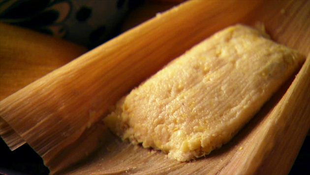

¡TAMALES!

homemade tamales
tamalese are great for you, and are easy to take with yoU!
ingredients
- tamale masa
- water
- salt
- baking soda
- butter
- corn starch
- dried corn husks
- grind ~1.5 tsp salt
- mix salt with 2 tsp of corn starch
- mix above with 1 tsp of baking soda
- pour 4 cups of masa into a large bowl
- cut 1/2 # butter into 16 chunks
- mix all above
- incorporate 3 cups of water into above
- separate dough into 16 portions and fill corn husks
- steam tamales on top of the beans (whenver you make them next) for 1 hour or more.